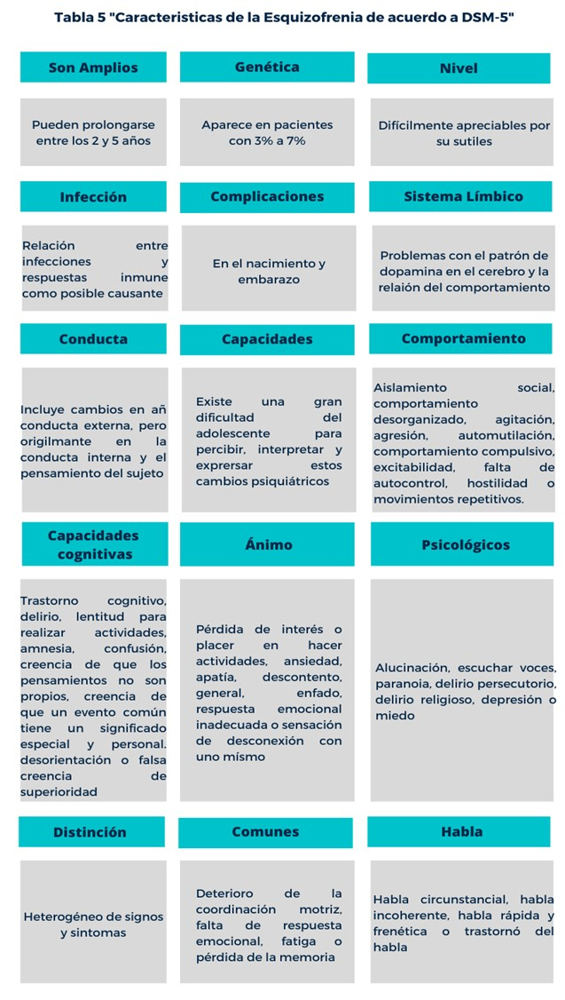

Cimientos de la Esquizofrenia
2.1 Estadisticas de niños y adolescentes diagnosticados con esquizofrenia
Aunque es difícil precisar las características de este trastorno debido a que a cada una de las personas que lo padecen lo viven de distinta forma, podemos ubicar las siguientes características más comunes:
Aunque es difícil precisar las características de este trastorno debido a que a cada una de las personas que lo padecen lo viven de distinta forma, podemos ubicar las siguientes características más comunes:
La esquizofrenia es un grupo de trastornos psiquiátricos graves que, al contrario de lo que mucha gente cree, no tienen por qué parecerse entre sí. Los tipos de esquizofrenia son lo que durante mucho tiempo han servido para determinar la salud mental de los pacientes que presentan los síntomas, aunque saber reconocerlos y distinguirlos no es sencillo.
¿Subtipos de esquizofrenia o esquizofrenia a secas?
No está nada claro si hay que distinguir o no entre tipos de esquizofrenia, pero muchos especialistas del ámbito médico siguen haciéndolo. Dependiendo de la categorización de los síntomas y el énfasis que se ponga en las variaciones y distintas formas en las que puede aparecer la esquizofrenia se utilizará un solo concepto para explicar todos los casos de esta enfermedad o bien se utilizarán diversas etiquetas para concretar más: no existe un criterio objetivo que permita dirimir esta cuestión.
Como conocimiento es poder, aquí puedes encontrar una descripción de las características de los tipos de esquizofrenia que han sido excluidos de los DSM en los últimos años.
Este tipo de esquizofrenia se caracteriza por las graves alteraciones psicomotoras que presenta el paciente. Estas alteraciones patológicas no siempre son las mismas, aunque las principales son la inmovilidad y la rigidez cérea, en las que la persona mantiene los músculos tensos de manera que parece una figura de cera, la incapacidad de hablar y la adopción de posturas extrañas estando de pie o en el suelo.
Durante las fases en las que se presenta catatonia, también aparecen alteraciones en la consciencia y otras alteraciones como el mutismo, el estupor y la mirada fija, alternando estos síntomas de tipo negativo con otros como la agitación. Sin embargo, hay que tener en cuenta que puede darse mucha variabilidad en el modo en el que se presenta la esquizofrenia catatónica, y la mayoría de los pacientes no presentan a la vez todos los síntomas asociados a esta.
Uno de los tipos de esquizofrenia más conocidos, en este caso los síntomas tienden a ser más psíquicos que motores; de hecho, las personas con esta clase de esquizofrenia no tienen fallos en la capacidad motora o del habla. Entre estas señales de alteración en las funciones psíquicas se encuentra la manía persecutoria. También es frecuente que en este tipo de esquizofrenia se den alucinaciones auditivas y delirios.
Esta ha sido una categoría para designar un posible tipo de esquizofrenia en el que no hay tantos síntomas positivos (es decir, aquellos que definen la conducta proactiva y las iniciativas de la persona) y sí síntomas negativos (caracterizados por la ausencia de procesos psicológicos básicos y con la falta de voluntad y motivación). Dicho de otro modo, este tipo de esquizofrenia se caracteriza por los procesos mentales que se ven disminuidos, y no tanto por los excesos inusuales de actividad mental.
Las personas que presentaban este tipo de esquizofrenia presentaban muchas formas de inhibición, aplanamiento afectivo, poca comunicación verbal y no verbal, etc. A diferencia del resto de tipos de esquizofrenia que veremos aquí, este no aparecía en el DSM-IV, sino que ha sido una categoría propuesta por la OMS.
Esta categoría era usada como un tipo que se da cuando en el pasado ha habido un brote de esquizofrenia, pero en el presente los síntomas positivos son muy moderados y de baja intensidad, mientras que lo que más llama la atención son los "restos" de síntomas negativos que han quedado.
En este tipo de esquizofrenia, más que existir comportamientos que en sí mismos son signo de patología, la enfermedad se expresa a través del modo en el que se organizan y se suceden las acciones de la persona. Es decir, la persona muestra desorganización en sus estados emocionales, en lo que dice y/o en su forma de moverse.
Esta es una categoría "cajón de sastre" para poder clasificar aquellos casos que no encajan en los criterios diagnósticos del resto de tipos de esquizofrenia. Por ello, no se puede considerar un tipo de esquizofrenia consistente.
Se puede distinguir una etapa anterior a la psicosis con síntomas distintos y de menor intensidad. Distinguir estas etapas anteriores es de gran importancia puesto que es el mejor momento para una intervención biopsicosocial.
La constituye el primer síntoma inespecífico hasta la aparición del primer síntoma positivo. Esta etapa es variable. Tiene un promedio de 2 a 6 años de duración.
Síntomas:
Comienza con la aparición del primer síntoma positivo hasta que se inicia el brote, de manera gradual o aguda. En esta etapa el paciente puede experimentar una alucinación, un delirio, o una depresión. En esta etapa es fácil que la persona presente comportamientos como el aislamiento, peleas frecuentes, problemas interpersonales, dificultades en las relaciones sociales, etc.
Aparece el humor y las percepciones delirantes e interpretaciones del entorno de forma autorreferencia. El mundo se vuelve amenazante para el paciente y éste lo vive de forma angustiosa. Es por ello que el paciente comienza a dar significados a los sucesos de su entorno cuando realmente es él el que está cambiando.
Esta etapa es corta y tiene un promedio 3 a 12 meses. Es de esta etapa que surgen los primeros síntomas positivos.
Del estado anterior emergen la variedad y pluralidad de síntomas positivos que hacen que el paciente pierda el contacto definitivo con la realidad y donde puede volverse peligroso para sí mismo o para terceros.
Los síntomas positivos pueden ser:
• Alucinaciones: Engaños de los sentidos, percepciones que no reflejan la realidad pero que el paciente vive como completamente reales. Las alucinaciones también pueden ser de tipo gustativo o táctil, aunque suelen ser menos frecuentes.
• Delirios: Son convicciones erróneas sin base real. El paciente está convencido de algo que va en contra de la lógica y por lo tanto estos pensamientos son irrefutables por la lógica. Los delirios suelen ser complejos y sistematizados siendo algunas veces un entramado de ideas que pueden formar una historia. Los delirios pueden ser:
-> Pasionales: Como por ejemplo el delirio celotípico tener celos de la pareja sin razones evidentes.
-> Delirios sensitivos: Se refiere a conflictos con una o más personas.
-> Delirios de interpretación: Como por ejemplo el pensar que existe una conspiración en contra de la persona o que alguien quiere envenenarle.
-> Trastornos de pensamiento y del lenguaje: las argumentaciones ilógicas, la incoherencia en lo que la persona esquizofrénica relata, el descarrilamiento en el lenguaje, el habla rápida (logorrea), la falta de atención a lo que ocurre a su alrededor y la inconexión en lo que dice son algunos ejemplos de estos trastornos en los pacientes esquizofrénicos.
Constituye la llamada esquizofrenia residual. Tras la sintomatología propia del brote psicótico, aparecen los síntomas negativos en grado variable. Una complicación en esta etapa es la depresión post-brote que puede predisponer al paciente a riesgo del suicidio.
Los síntomas negativos pueden ser:
• Pobreza afectiva: En los pacientes esquizofrénicos existe un empobrecimiento emocional. Ni las emociones positivas son intensas ni tampoco las negativas. Esa pobreza emocional se manifiesta en los gestos poco expresivos sobre todo faciales. Los movimientos son mecánicos y predomina una falta de espontaneidad incluso en el habla. La alegría la manifiesta de forma artificial e inapropiada al contexto. La afectividad es plana y no ondula como en las otras personas. Las relaciones interpersonales son por tanto distantes ya que la falta de emocionalidad les impide empatizar correctamente con las demás personas.
• Alogia: La alogia es el empobrecimiento del pensamiento. La persona esquizofrénica muestra una baja capacidad asociativa, un lenguaje pobre, estereotipado y repetitivo que usa contenidos simples. Las cogniciones son lentas con muy poco pensamiento alternativo.
• Apatía: También conocida como abulia, es la falta de interés en lo cotidiano que aparece continuamente en el paciente esquizofrénico. La persona no tiene inquietudes, no muestra curiosidad por las cosas: esto se manifiesta en todas las facetas de su vida incluso en su higiene o en su forma de vestir.
• Anhedonia: Es la falta de disfrute de las cosas. Muy ligada a la apatía, no muestra interés por algo que a otras personas les causa disfrute. Esta anhedonia difiere de la anhedonia en los depresivos en que en los pacientes esquizofrénicos es crónica y no está acompañada de sentimientos de tristeza.